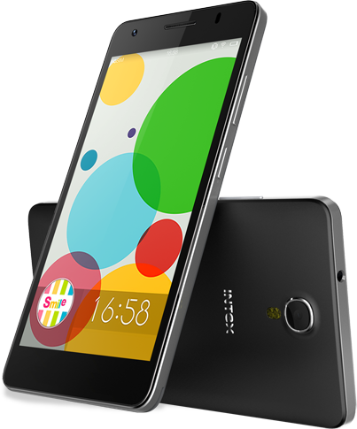

Specifications of Intes 4X (Black, 8 GB)
Technical Details
OS Android
RAM 1 GB
Item Weight 109 g
Product Dimensions 14.2 x 7.2 x 9 cm
Item model number Cloud M6
Wireless communication technologies Bluetooth
Connectivity technologies GSM, 3G, WCDMA, EDGE, GPRS, WiFi
Special features Video Calls, Dual SIM, GPS, Music Player, Video Player, FM Radio, Gravity sensor, Light sensor, E-mail, Expandable Memory: 32GB
Device interface - primary Touch Screen
Form factor Touchscreen Phone
Weight 110 Grams
Colour Black
Battery Power Rating 2000
Whats in the box Handset, Battery, Earphone, Data Cable, Charger, User Manual, Warranty Card, Protection Cover and Screen Guard
Price: Rs. 12,590.00